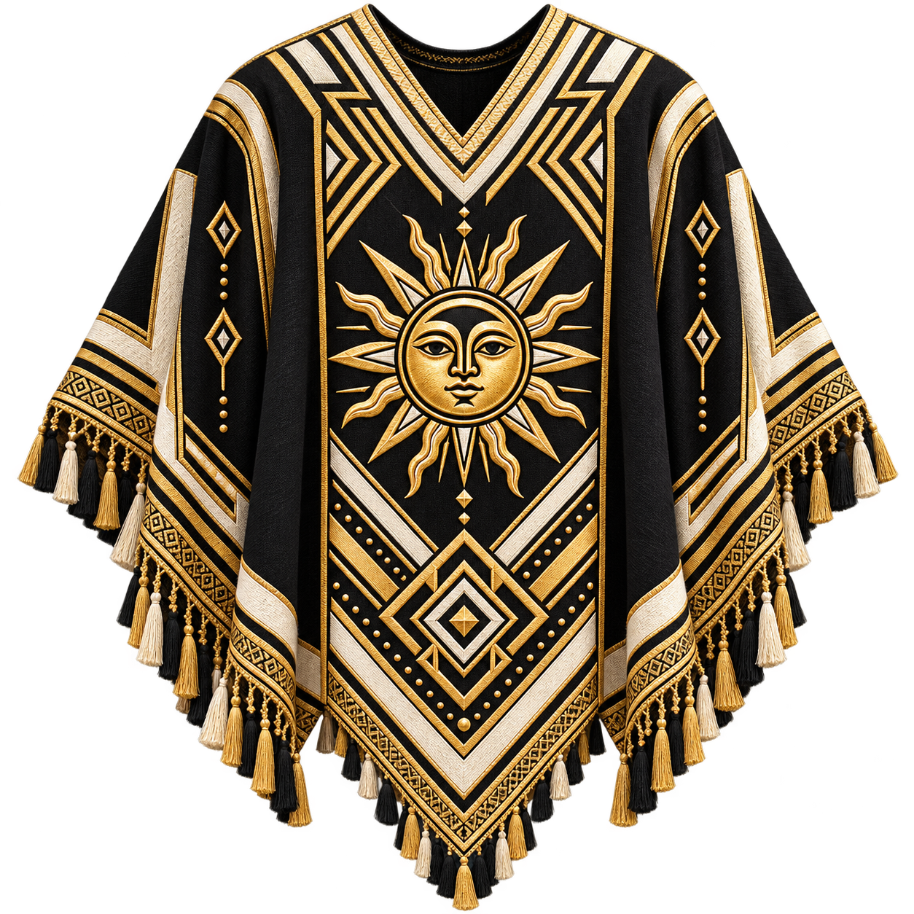

Belén, Catamarca
Una región donde el oficio textil se transmite de generación en generación.

Poncho Bandera
Tradición & diseño
Rua Chaky nace del trabajo textil familiar en Belén, Catamarca. Cada poncho lleva el tiempo, el oficio y la historia de quienes lo hacen.
Conocé nuestras piezasLa herencia textil se encuentra con una mirada contemporánea. En cada pieza se reconocen las manos, el tiempo y el territorio.
Una región donde el oficio textil se transmite de generación en generación.
Tejidos con técnicas tradicionales, atención al detalle y tiempo propio.
Cada poncho tiene su propio carácter; el resultado nunca es exactamente igual a otro.